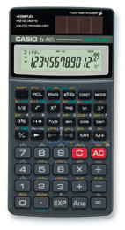

WebCal 計數機網頁
Casio fx-992S簡介

編寫日期: 2007年1月8日
Casio fx-992S為香港中學會考及高級程度會考的准用計數機之一。輸入的方法為V.P.A.M.系統，即是將計算式依書寫的順序輸入計算機，例如: 計算 sin 30，是按 sin 30 = ，並且可以顯示輸入的函數功能，這點與傳統舊款計算機(例如:fx-50F)有點不同，不過這部計算機與fx-50F都是實時運算形式，例如:計算sin 30 + cos 30＝時，當按下加號時，會即時計算出sin 30的數值，並且顯示sin 30的中間數值，按＝時才顯示最後答案，與S.V.P.A.M計算機(例如: fx-3650P)並不相同，亦沒有S.V.P.A.M.計算機另一行十個字元顯示輸入的算式。
功能方面，這部計數機不是程式計數機，亦沒好像fx-50F的內置程式庫(例如:一元二次方程)，亦沒有好像fx-3650P微積分計算、小數轉換分數及重現(REPLAY)功能，不過就有以下較特的功能：
˙複數計算功能(fx-50F沒有這項功能)，對計算基本複數問題會較為方便。
˙計算機有十二數位的假數部(Mantissa)，比fx-50F或fx-3650P多兩位，並且在顯示大整數時，每隔三個位有一個細小的分隔號，因此閱讀大整數時較為方便及清楚。
˙計數機內部使用14位進行運算，準確度較fx-3650P內部使用12位為高。
˙有一百二十八個科學計算用常數的記憶，對於經常要使用科學常數運算的朋友會很方便。
˙工程符號計算：除了可以輸入工學符號單位外(f、p、n、μ、m、k、M、G及T)，當進入工學符號狀態，答案及輸入工學單位會自動以工學符號表示，對於工學計算十分方便。
˙基數計算時，二進數有32位，八進數有11位，二進制、八進制、十進制及十六進制的數值範圍完全一致，由於電腦中進制以補數形式表示負數。對於計算電腦的32元位元(32 bits)問題會相當方便。
3. 其它計數機簡介
4. 如何選購會考計數機
5. 網站索引
6. 聯絡網主